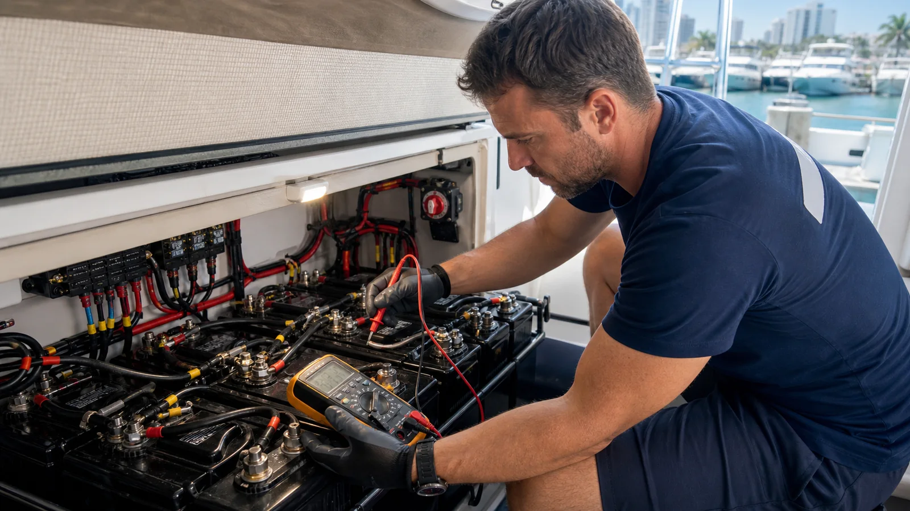

En una embarcación conviven baterías de arranque y de servicio. La primera entrega mucha corriente durante pocos segundos; la segunda alimenta luces, nevera, bombas, audio y electrónica durante más tiempo. Usar el tipo equivocado, mezclar edades o configurar mal los selectores puede dejar el motor sin energía aunque el banco parezca grande.
Las cinco causas más comunes
- Batería envejecida o descargada profundamente. Puede mostrar voltaje aceptable y caer cuando se exige corriente de arranque.
- Consumo parasitario. Bombas automáticas, memorias, inversores, estéreo o un circuito defectuoso siguen consumiendo.
- Falla de carga. Alternador, regulador, cargador de muelle, fusible o cableado no entregan lo esperado.
- Terminales y conductores. La corrosión aumenta resistencia y produce caída de voltaje, calor o funcionamiento intermitente.
- Diseño o uso incorrectos. Banco pequeño, batería automotriz, equipos nuevos sin recalcular carga o selector mal operado.
Cómo se diagnostica sin adivinar
1. Inspección segura
Se revisan fijación, ventilación, deformación, olor, temperatura, terminales, protectores, fusibles y calibre de conductores. Una batería hinchada, caliente o con fuga requiere detener la revisión y seguir el procedimiento de seguridad correspondiente.
2. Estado real de la batería
Después de una carga correcta se realiza una prueba compatible con su química. Mercury señala que la prueba bajo carga es la mejor forma de evaluar una batería con varias temporadas de uso.
3. Sistema de carga
Se comparan mediciones en reposo, durante arranque y con el motor o cargador trabajando. El rango correcto depende del sistema y de la batería; por eso una cifra aislada tomada de internet puede conducir a un diagnóstico equivocado.
4. Consumo con el bote apagado
Se mide corriente y se aíslan circuitos de forma controlada hasta localizar el consumo. No se recomienda retirar fusibles sin registro ni desconectar una batería con el motor funcionando.
Qué información ayuda al técnico
- Marca, química, capacidad y edad aproximada de cada batería.
- Qué equipos estaban encendidos y cuánto tiempo.
- Si falla después de navegar, después de permanecer amarrado o solo al arrancar.
- Fotos del banco, selectores, cargador y tablero sin mover conexiones.
- Modificaciones recientes: audio, nevera, luces, inversor o paneles solares.
Preguntas frecuentes
¿Por qué se descarga con todo apagado?
Porque puede haber un consumo automático u oculto, o porque la batería ya no almacena su capacidad nominal. La medición de corriente permite distinguirlos.
¿Sirve una batería de carro?
No es la recomendada. El ambiente, la vibración y las cargas del bote requieren una batería marina de especificación correcta.
¿Cambio todas las baterías?
No antes de comprobar el diseño y la causa. En bancos combinados sí puede ser necesario mantener química, capacidad y edad compatibles, pero debe evaluarse el sistema completo.
¿Tu bote amanece sin batería?
Podemos revisar banco, cargador, alternador, consumos y conexiones en Cartagena.
Pedir diagnóstico eléctrico